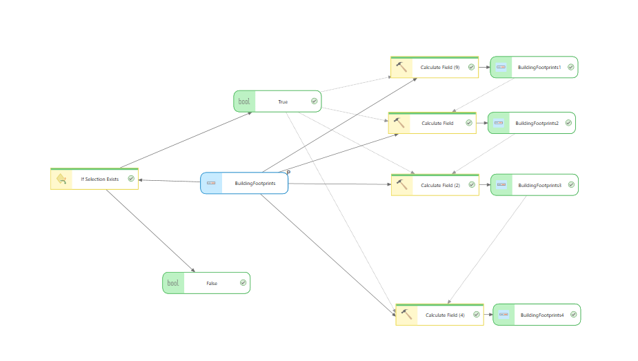
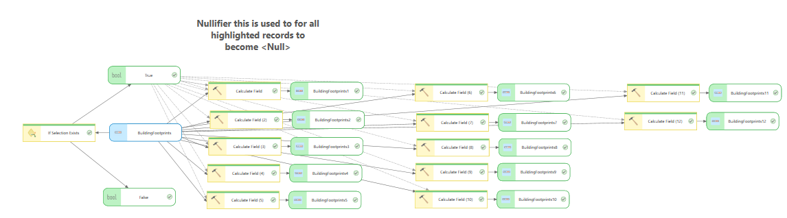

Arcpy Scripts used for GIS Automation
This project contains a collection of ArcPy scripts designed to automate repetitive GIS tasks and improve data processing efficiency.
Building Verification Automation

Developed an ArcPy/Python workflow that automatically populated residential building classifications based on multiple attribute fields. The script standardized values, reduced manual editing, and improved QA/QC consistency across datasets.
Detailed Model

Skills Demonstrated
- ArcGIS ModelBuilder
- ArcPy automation
- Conditional workflow logic
- Attribute standardization
- Quality assurance and quality control